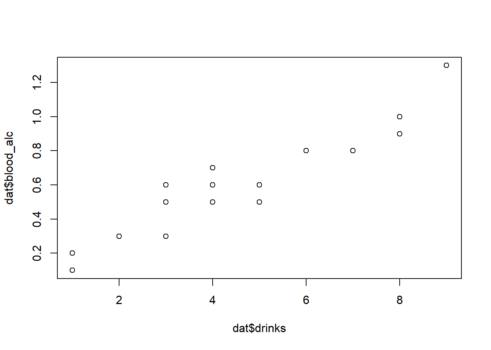
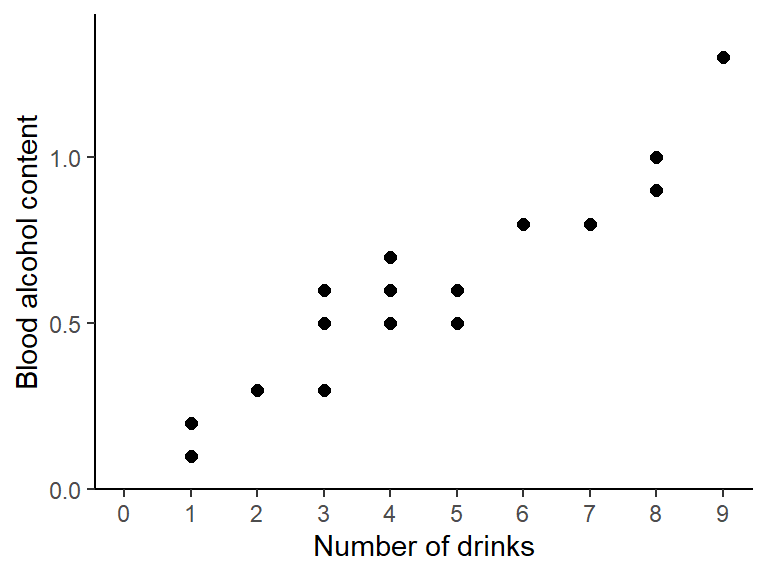
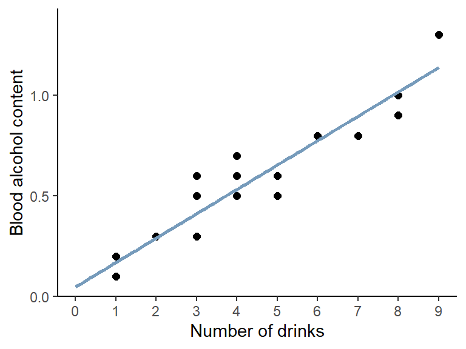
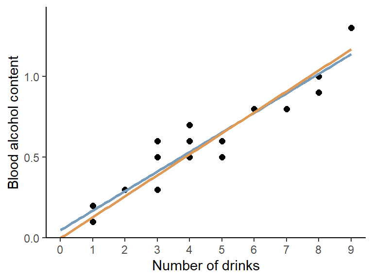

Correlation & Regression
This chapter is trying to give you a feeling for what correlation and (simple linear) regression is. I am aware that the example data doesn’t have anything to do with agriculture or related fields, but I decided to keep it because it allows for an intuitive conclusion at the end.
# packages
pacman::p_load(
modelbased, # get model predictions/expectations
tidyverse # data import and handling
)Data
This is data I made up: Peter and Max went out multiple evenings and at the end of every evening wrote down how many drinks they had and what the alcohol content in their blood was.
Import
# data (import via URL)
dataURL <- "https://raw.githubusercontent.com/SchmidtPaul/DSFAIR/master/data/DrinksPeterMax.csv"
dat <- read_csv(dataURL)
dat## # A tibble: 20 × 3
## Person drinks blood_alc
## <chr> <dbl> <dbl>
## 1 Max 1 0.2
## 2 Max 2 0.3
## 3 Max 3 0.5
## 4 Max 3 0.6
## 5 Max 4 0.6
## 6 Max 4 0.5
## 7 Max 4 0.7
## 8 Max 5 0.6
## 9 Max 7 0.8
## 10 Max 8 1
## 11 Peter 1 0.1
## 12 Peter 1 0.1
## 13 Peter 1 0.2
## 14 Peter 1 0.2
## 15 Peter 1 0.1
## 16 Peter 3 0.3
## 17 Peter 5 0.5
## 18 Peter 6 0.8
## 19 Peter 8 0.9
## 20 Peter 9 1.3Goal
The goal of this analysis is to answer the question how the number of
drinks relates to the blood alcohol level. Note that we will completely
ignore the column Person, since we do not care whether data
came from Peter or Max in this chapter. Thus, we only focus on the two
numeric columns drinks and
blood_alc.
Exploring
To quickly get a first feeling for this dataset, we can use
summary() and draw a plot():
summary(dat)## Person drinks blood_alc
## Length:20 Min. :1.00 Min. :0.100
## Class :character 1st Qu.:1.00 1st Qu.:0.200
## Mode :character Median :3.50 Median :0.500
## Mean :3.85 Mean :0.515
## 3rd Qu.:5.25 3rd Qu.:0.725
## Max. :9.00 Max. :1.300plot(y = dat$blood_alc, x = dat$drinks)
Apparently, the number of drinks ranges from 1 to 9 with a mean of 3.85, while the measured blood alcohol levels range from 0.1 to 1.3 with a mean of 0.515. The plot shows a clear trend of increasing blood alcohol levels with a higher number of drinks - which is what we would expect.
Here is the same plot created with {ggplot2}:
ggplot(data = dat, aes(x = drinks, y = blood_alc)) +
geom_point(size = 2) +
scale_x_continuous(
name = "Number of drinks",
limits = c(0, 9),
breaks = seq(0, 9)
) +
scale_y_continuous(
name = "Blood alcohol content",
limits = c(0, NA),
expand = expansion(mult = c(0, 0.1))
) +
theme_classic()
Correlation
What is it?
One way of actually putting a number on this relationship is to estimate the correlation. When people talk about correlation (\(\rho\) or \(r\)) in statistics, they usually refer to the Pearson correlation coefficient, which is a measure of linear correlation between two numeric variables. Correlation can only have values between -1 and 1, where 0 means no correlation, while all other possible values are either negative or positive correlations. The farther away from 0, the stronger is the correlation.

Simply put, a positive correlation means “if one variable gets bigger, the other also gets bigger” and a negative correlation means “if one variable gets bigger, the other gets smaller”. Therefore, it does not matter which of the two variables is the first (“x”) or the second (“y”) variable. Thus, a correlation estimate is not like a model and it cannot make predictions. Finally, “correlation does not imply causation” means that just because you found a (strong) correlation between two things, you cannot conclude that there is a cause-and-effect relationship between the two, which becomes clear when looking at these examples.
How to get it
If you only want to get the actual correlation estimate, you can use
the function cor() and provide the two numeric variables
(as vectors):
cor(dat$drinks, dat$blood_alc)## [1] 0.9559151So the correlation between number of drinks and blood alcohol content in our sample is ca. 0.96 and thus very strong, since it is almost 1.
How to test it
If you would like additional information, such as a confidence
interval and a test resulting in a p-value, you can use
cor.test() instead of cor():
cor.test(dat$drinks, dat$blood_alc)##
## Pearson's product-moment correlation
##
## data: dat$drinks and dat$blood_alc
## t = 13.811, df = 18, p-value = 5.089e-11
## alternative hypothesis: true correlation is not equal to 0
## 95 percent confidence interval:
## 0.8897837 0.9827293
## sample estimates:
## cor
## 0.9559151Looking at this longer output, you can see the sample estimate at the
bottom, a confidence interval above it and a p-value with the
corresponding test hypothesis above that. Run ?cor.test()
and look at the “Details” section for more info. Here, our correlation
estimate of 0.96 is signficantly different from 0, since the p-value is
0.0000000000509 and therefore \(<
0.05\). Furthermore, the confidence interval is 0.890 - 0.983
meaning that we are 95% sure that the true correlation is somewhere in
that range.
Note that correlation is a widely used statistic so that there are several R packages that deal with it. I suggest taking a look at {correlation} and {corrr}.
Simple linear regression
What is it?
When people talk about regression in statistics, they usually refer to simple linear regression, which - simply put - finds the best straight line that goes through dots in a scatter plot of two numeric variables:
The linear model behind such a straight line is simply:
\[ y = \alpha + \beta x\]
where \(\alpha\) or \(a\) is the intercept and \(\beta\) or \(b\) is the slope, while \(y\) and \(x\) are our data points. Fitting such a regression is really just finding the optimal estimates for \(\alpha\) and \(\beta\).
In contrast to correlation, a simple linear regression is a model and it therefore matters which variable is \(y\) (dependent variable) and which is \(x\) (independent), because after fitting the regression, the latter can be used to predict the former.
How to get it
In R, we can use the lm() function for fitting linear
models so that it fits the simple linear regression equation shown above
easily:
reg <- lm(formula = blood_alc ~ drinks, data = dat)As you can see, we refer to our data object dat in the
data = argument so that in the formula =
argument we only need to write the names of the respective columns in
dat. Furthermore, we store the results in the
reg object. When looking at this object, we get the
following results:
reg##
## Call:
## lm(formula = blood_alc ~ drinks, data = dat)
##
## Coefficients:
## (Intercept) drinks
## 0.04896 0.12105First, our command is repeated and then the “Coefficients” are shown, which are indeed the estimates for \(a\) and \(b\). So the best straight line is:
\[ bloodalc = 0.049 + 0.121 * drinks \] which looks like this:
ggplot(data = dat, aes(x = drinks, y = blood_alc)) +
geom_point(size = 2) +
geom_smooth(
method = "lm",
formula = "y ~ x",
se = FALSE,
fullrange = TRUE,
color = "#769bbb"
) +
scale_x_continuous(
name = "Number of drinks",
limits = c(0, 9),
breaks = seq(0, 9)
) +
scale_y_continuous(
name = "Blood alcohol content",
limits = c(0, NA),
expand = expansion(mult = c(0, 0.1))
) +
theme_classic()
Here is a little more info why
formula = blood_alc ~ drinks leads to R estimating the
\(a\) and \(b\) we want. What makes sense is that
blood_alc is \(y\),
drinks is \(x\) and
~ would therefore be the \(=\) in our equation. However, how come we
never had to write anything about \(a\)
or \(b\)? The answer is that (i) when
fitting a linear model, there is usually always an intercept (=\(a\)) by default and (ii) when writing a
numeric variable (=drinks) as on the right side of the
equation, it will automatically be assumed to have a slope (=\(b\)) multiplied with it. Accordingly,
blood_alc ~ drinks automatically translates to
blood_alc = a + b*drinks so to speak.
Is this right?
After fitting a model, you may use it to make predictions. Here is one way of obtaining the expected blood alcohol content for having 0, 1, 2, or 3 drinks is according to our simple linear regression:
preddat <- data.frame(drinks = seq(0, 3))
estimate_expectation(model = reg, data = preddat)## Model-based Expectation
##
## drinks | Predicted | SE | 95% CI
## -----------------------------------------
## 0.00 | 0.05 | 0.04 | [-0.04, 0.13]
## 1.00 | 0.17 | 0.03 | [ 0.10, 0.24]
## 2.00 | 0.29 | 0.03 | [ 0.23, 0.35]
## 3.00 | 0.41 | 0.02 | [ 0.36, 0.46]
##
## Variable predicted: blood_alcYou may notice that according to our model, the expected alcohol content in your blood when having 0 drinks is actually ca. 0.05 and thus larger than 0. This is obviously not true in real life. Instead, the true intercept should actually be exactly 0, so what went wrong?
First of all, data will never be perfect in the sense that the when a parameter really is e.g. 42, its estimate based on measured data is also exactly 42.000000… . Instead, there are e.g. measurement errors: Peter and Max may have forgotten a drink or two or their device to measure the alcohol content is not precise enough. In fact, this would most likely be the underlying reason here - but remember that I made the data up.
So I would like you to think about the issue from two other angles:
- Are the results really saying the intercept is > 0?
- Did we even ask the right question or should we have fitted a different model?
Are the results really saying the intercept is > 0?
No, they are not. Yes, the sample estimate for the intercept is
0.04896, but when looking at more detailed information via
e.g. summary(),
summary(reg)##
## Call:
## lm(formula = blood_alc ~ drinks, data = dat)
##
## Residuals:
## Min 1Q Median 3Q Max
## -0.154206 -0.070011 -0.004206 0.039202 0.187891
##
## Coefficients:
## Estimate Std. Error t value Pr(>|t|)
## (Intercept) 0.048963 0.040592 1.206 0.243
## drinks 0.121049 0.008764 13.811 5.09e-11 ***
## ---
## Signif. codes: 0 '***' 0.001 '**' 0.01 '*' 0.05 '.' 0.1 ' ' 1
##
## Residual standard error: 0.1009 on 18 degrees of freedom
## Multiple R-squared: 0.9138, Adjusted R-squared: 0.909
## F-statistic: 190.8 on 1 and 18 DF, p-value: 5.089e-11you can see that the p-value for the intercept is 0.243, which is
larger than 0.05 and thus not significantly different from 0. A second
indication can be found when looking at the confidence interval of the
expected value for having 0 drinks in the table above:
[-0.04, 0.13]. This interval actually includes 0 which
suggests that the true expected blood alcohol content for having 0
drinks may indeed be 0.
Should we have fitted a different model?
We certainly could have and we will actually do it now. It must be clear that statistically speaking there was nothing wrong with our analysis. However, from a biological standpoint or in other words - because of our background knowledge and expertise as scientists, we could have indeed actively decided for a regression analysis that does not have an intercept and is thus forced to start 0 in terms of blood alcohol content. After all, statistics is just a tool to help us make conclusions. It is a powerful tool, but it will always be our responsibility to “ask the right questions” i.e. apply expedient methods.
A simple linear regression without an intercept is strictly speaking no longer “simple”, since it no longer has the typical equation:
\[ y = \beta x\] To let
lm() that it should not estimate the default intercept, we
simply add 0 + right after the ~. As expected,
we only get one estimate for the slope:
reg_noint <- lm(formula = blood_alc ~ 0 + drinks, data = dat)
reg_noint##
## Call:
## lm(formula = blood_alc ~ 0 + drinks, data = dat)
##
## Coefficients:
## drinks
## 0.1298meaning that this regression with no intercept is estimated as
\[ bloodalc = 0.1298 * drinks \]
and must definitely predict 0 blood_alc when having 0
drinks. As a final result, we can compare both regression
lines visually in a ggplot:
ggplot(data = dat, aes(x = drinks, y = blood_alc)) +
geom_point(size = 2) +
geom_smooth(
method = "lm",
formula = "y ~ x",
se = FALSE,
fullrange = TRUE,
color = "#769bbb"
) +
geom_smooth(
method = "lm",
formula = "y ~ 0 + x",
se = FALSE,
fullrange = TRUE,
color = "#DF9A57"
) +
scale_x_continuous(
name = "Number of drinks",
limits = c(0, 9),
breaks = seq(0, 9)
) +
scale_y_continuous(
name = "Blood alcohol content",
limits = c(0, NA),
expand = expansion(mult = c(0, 0.1))
) +
theme_classic()
R-Code and exercise solutions
Please click here to find a folder with .R
files. Each file contains
- the entire R-code of each example combined, including
- solutions to the respective exercise(s).
Please feel free to contact me about any of this!
schmidtpaul1989@outlook.com